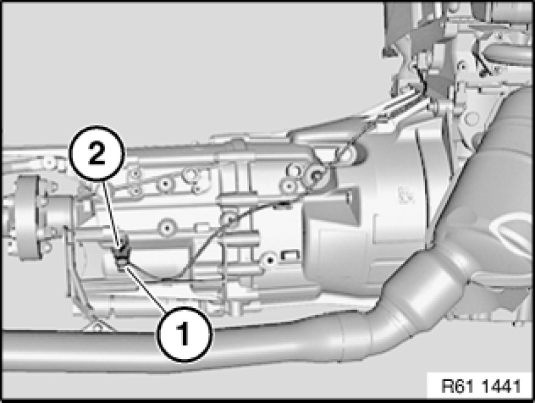
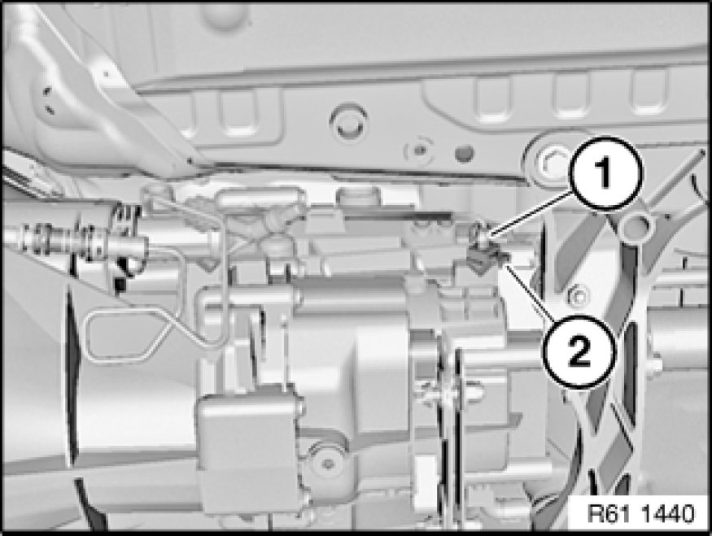

Replacing Switch for Reversing Light
61 31 270 - Replacing switch for reversing light

Note:
The installation location of the reversing light switch can vary, depending on the transmission model.

Necessary preliminary tasks:
- If necessary, remove rear underbody protection Removing and Installing/Replacing Rear Underbody Protection

Version A:
Disconnect plug connection (1).
Release switch for reversing light (2).
Tightening torque 61 31 2AZ [1][2]Backup Lamp Switch.

Version B:
Disconnect plug connection (1).
Release switch for reversing light (2).
Tightening torque 61 31 2AZ [1][2]Backup Lamp Switch.